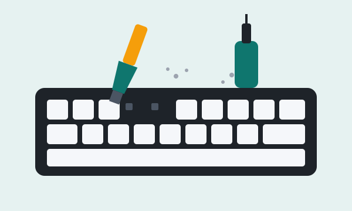

Maintenance Guides
Open a guide to see the steps. Start with the toolkit checklist so you have everything ready before you begin.
Your toolkit
Check off the tools you already own. Your progress is saved on this device.
Step-by-step guides
Quick keyboard clean (5 minutes, weekly)

- Unplug the keyboard or turn off its wireless connection.
- Turn it upside down and gently tap it to drop loose crumbs.
- Use a soft brush or short bursts of compressed air between the keycaps.
- Wipe the keycaps with a microfiber cloth lightly dampened with isopropyl alcohol.
- Let it dry for a few minutes before plugging it back in.
Keyboard deep clean (1 hour, every few months)
- Take a photo of the keyboard so you remember where every keycap goes.
- Unplug it and remove the keycaps with a keycap puller, pulling straight up.
- Soak the keycaps in warm, soapy water for about 30 minutes, then rinse them.
- While they soak, brush and blow out the exposed plate and switches.
- Wipe the case and plate with a cloth and a little isopropyl alcohol.
- Let the keycaps dry completely, ideally overnight, before reinstalling them.
Caution: Never soak the keyboard itself or pour liquid onto the switches. Only the removed keycaps go in water.
PC dust-out (30 minutes, every 3 to 6 months)
- Shut down the PC, switch the power supply off, and unplug the cable.
- Move the PC to a well-ventilated area, outside if possible.
- Remove and wash the dust filters, then let them dry completely.
- Remove the side panel and work from the top of the case down.
- Hold each fan still and clean it with short bursts of compressed air.
- Blow dust out of the heatsinks, graphics card, and power supply vents.
- Reinstall the filters and side panel, then reconnect power.
Caution: Letting fans spin freely from compressed air can damage them. Use only short bursts near the motherboard and memory, and keep the can upright.
Homes with pets, carpet, or smokers should clean every two to three months.
Your first keyboard build
- Pick a hot-swappable kit so you can install switches without soldering.
- Choose a switch family using the switch guide.
- Test the bare board by plugging it in and shorting each socket with tweezers.
- Press each switch firmly into the plate until it clicks, keeping the pins straight.
- Install the stabilizers and large keycaps first, then the rest of the keycaps.
- Test every key with an online key tester before you start using it.